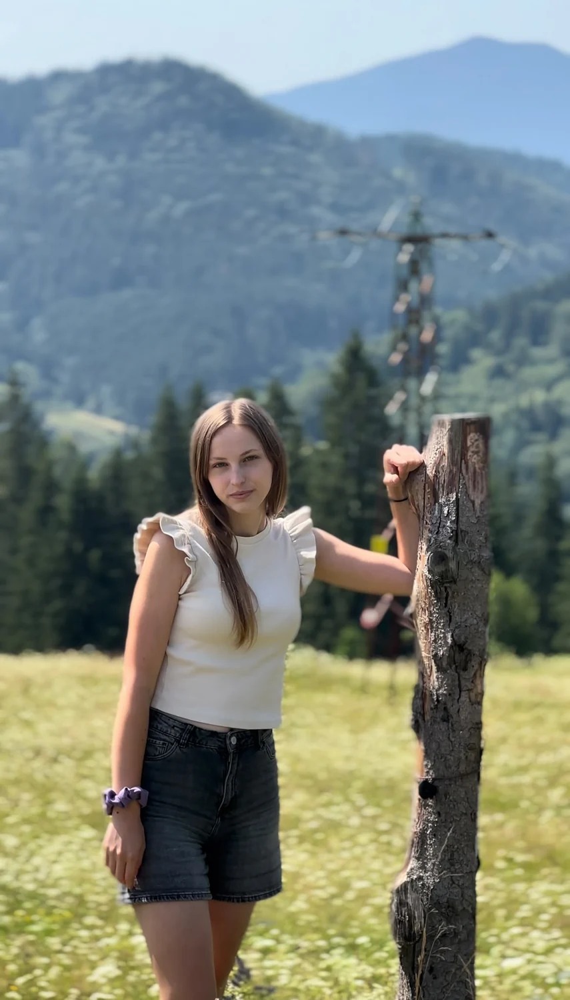
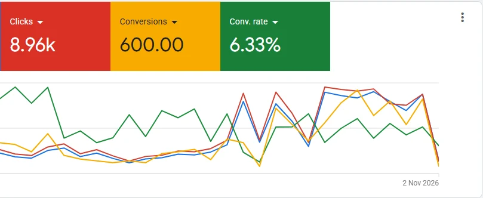

ROXANA.CENUȘĂ
MARKETING MANAGER
& PPC SPECIALIST
Creative thinking.
Technical precision.
Marketing that makes sense.

& GOOD IDEAS
NEW IDEAS
THE TOOLS
BEHIND THE IDEAS.
From the first ad to the final conversion, I connect the creative side of marketing with the technical details that make it work.
ONE MIND.
MANY HATS.
I love the part where strategy, creativity and numbers finally click.

Paid ads,
done thoughtfully.
Search, paid social, lead generation, ecommerce and the measurement behind it.
Social media growth
Audits · creative direction · channel strategy
Email marketing
Outreach · segmentation · nurture journeys
Websites & landing pages
Conversion journeys · front-end implementation
Analytics & tracking
GA4 · GTM · events · troubleshooting
WORK THAT
SPEAKS FOR ITSELF.
A curated selection of real sites, software and performance campaigns — with screenshots instead of stock visuals.
05 SELECTED PROJECTS / REAL WORKEvery project above uses an actual project screenshot. Names and account identifiers have been excluded from client-confidential ad results. Conversion figures are reported Google Ads conversions, not independently verified sales.
IT'S NOT JUST ABOUT RUNNING ADS.
IT'S ABOUT UNDERSTANDING WHAT WORKS.
A LITTLE
ABOUT ME.
ANALYTICAL HEART.
I'm a Marketing Manager & PPC Specialist based in Romania. I love finding the connection between smart strategy, compelling creative and reliable data.
My background in Economic Informatics gives me a technical edge — from conversion tracking and website work to campaign optimisation. Google Ads is my home base, but I'm just as happy diving into Meta Ads, analytics, email or a new growth challenge.
Paid advertising is my core specialty.
I bridge strategy, data and execution.
I work across international projects.
Marketing & paid media
International freelance work across advertising, tracking, social strategy and web projects.
PPC Specialist · Bossnet
Hands-on Google Ads, Meta and TikTok Ads account work and campaign optimization.
Economic Informatics
Alexandru Ioan Cuza University, Faculty of Economics and Business Administration.
FinTech Hackathon
3rd place at the UniCredit FinTech Hackathon for an interactive onboarding concept.
WHERE TO
FIND ME.
For projects, collaborations or simply to say hello — here's where you can find me online.
HAVE AN
IDEA? LET'S
MAKE IT WORK.
START HERE
Need help with campaigns, tracking or a digital project?
I'd love to hear what you're working on.